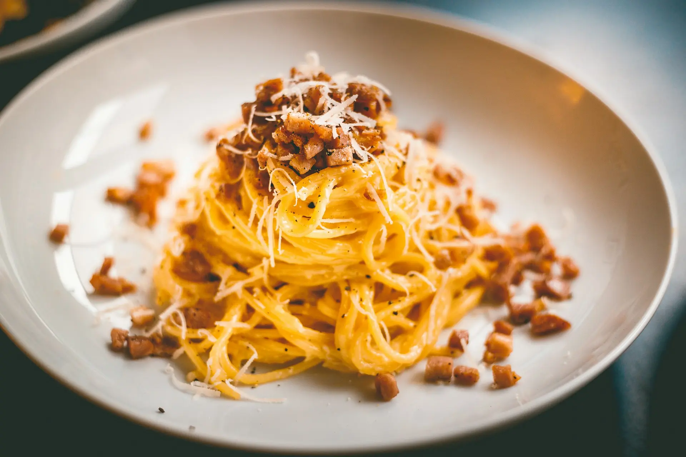
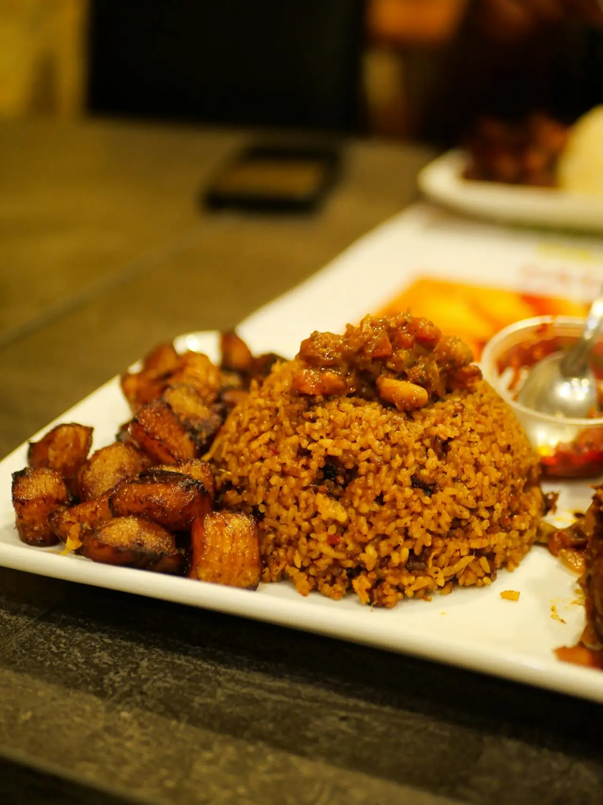

Discover Delicious Recipes
Explore a wide variety of recipes tailored to your tastes and dietary preferences.
Explore More RecipesPopular Recipes

Spaghetti Carbonara
A classic Italian pasta dish made with eggs, cheese, pancetta, and pepper.

Waakye
A well adored traditional Ghanaian dish made with rice and beans, often served with various sides.

Ghanaian Jollof
A flavorful West African rice dish cooked with tomatoes, onions, and spices.